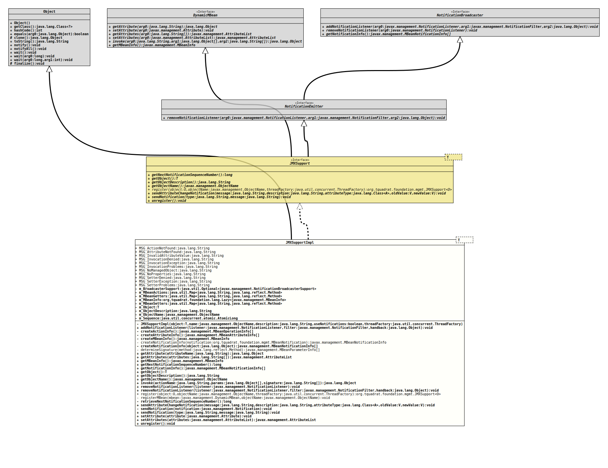

Module org.tquadrat.foundation.mgmt
Class JMXSupportImpl<T>
java.lang.Object
org.tquadrat.foundation.mgmt.internal.JMXSupportImpl<T>
- Type Parameters:
T- The type of the managed object.
- All Implemented Interfaces:
DynamicMBean,NotificationBroadcaster,NotificationEmitter,JMXSupport<T>
@ClassVersion(sourceVersion="$Id: JMXSupportImpl.java 995 2022-01-23 01:09:35Z tquadrat $")
@API(status=INTERNAL,
since="0.0.1")
public final class JMXSupportImpl<T>
extends Object
implements JMXSupport<T>
This class implements the interface
JMXSupport
that in turn extends the definition for a dynamic MBean
(DynamicMBean)
and can instrument any object whose class is annotated properly.- Author:
- Thomas Thrien (thomas.thrien@tquadrat.org)
- Version:
- $Id: JMXSupportImpl.java 995 2022-01-23 01:09:35Z tquadrat $
- Since:
- 0.0.1
- See Also:
- UML Diagram
-

UML Diagram for "org.tquadrat.foundation.mgmt.internal.JMXSupportImpl"
{kind=link}
-
Field Summary
FieldsModifier and TypeFieldDescriptionprivate Optional<NotificationBroadcasterSupport>This object supports the broadcasting of notifications.The actions (operations) for the JMX API; the action name is the key for this map.The getters for the JMX API; the attribute name is the key for this map.The predefinedMBeanInfostructure.The setters for the JMX API; the attribute name is the key for this map.private final TThe object that is instrumented by this generic MBean.private final StringThe description for the object that is instrumented by this generic MBean.private final ObjectNameThe object name for this generic MBean.private final AtomicLongThe notification sequence number.static final StringMessage: "There is no MBean action with the name \'%1$s\'".static final StringMessage: "The MBean attribute \'%1$s\' could not be found".static final StringMessage: "The value \'%s$s\' is invalid for the MBean attribute with the name \'%1$s\'".static final StringMessage: "Cannot invoke the MBean action \'%1$s\'".static final StringMessage: "The invocation of the MBean action \'%1$s\' caused an Exception".static final StringMessage: "There was a problem when invoking the MBean action \'%1$s\'".static final StringMessage: "The given Object is not annotated as \'ManagedObject\'".static final StringMessage: "No properties had been provided".static final StringMessage: "The invocation of the setter for the MBean attribute \'%1$s\' was denied".static final StringMessage: "The invocation of the setter for the MBean attribute \'%1$s\' caused an Exception".static final StringMessage: "There was a problem when invoking the setter for the MBean attribute \'%1$s\'". -
Constructor Summary
ConstructorsModifierConstructorDescriptionprivateJMXSupportImpl(T object, ObjectName name, String description, boolean useNotifications, ThreadFactory threadFactory) Initialises the abstract server part of a concrete server implementation. -
Method Summary
Modifier and TypeMethodDescriptionfinal voidaddNotificationListener(NotificationListener listener, NotificationFilter filter, Object handback) private final MBeanOperationInfo[]Creates the structure that holds the action information.private final MBeanAttributeInfo[]Creates the structure that holds the attribute information.private MBeanInfoCreates the MBeanInfo data structure.
This implementation will swallow all exceptions, an overriding implementation may want to log it.private MBeanNotificationInfo[]createNotificationInfo(Object object) Creates the structure that holds the notification info.private static MBeanNotificationInfocreateNotificationInfo(MBeanNotification notification) Creates a single notification info element.private static MBeanParameterInfo[]determineSignature(Method method) Determines the parameter information for the given method.final ObjectgetAttribute(String attributeName) getAttributes(String[] attributes) Get the values of several attributes of the Dynamic MBean.final MBeanInfofinal longReturns the sequence number that is used for the next notification.final MBeanNotificationInfo[]final TReturns the object that is instrumented by this MBean instance.final StringReturns the object description.final ObjectNameReturns the object name for this MBean.final Objectstatic <O> JMXSupport<O>register(O object, ObjectName objectName, ThreadFactory threadFactory) Registers the server with the JMX agent.private static voidregisterMBean(DynamicMBean mbean, ObjectName objectName) Register the MBean with the platform MBeanServer.final voidfinal voidremoveNotificationListener(NotificationListener listener, NotificationFilter filter, Object handback) private longReturns the notification sequence number for the current notification and increments the number.final <A,V extends A>
voidsendAttributeChangeNotification(String message, String description, Class<A> attributeType, V oldValue, V newValue) Sends an attribute change notification.final voidsendNotification(String type, String message) Sends a simple notification with a message text.private final voidsendNotification(Notification notification) Sends a notification.final voidsetAttribute(Attribute attribute) Sets the value of a specific attribute of the generic MBean.setAttributes(AttributeList attributes) Sets the values of several attributes of the generic MBean.final voidUnregisters the MBean from the MBeanServer.
-
Field Details
-
MSG_ActionNotFound
Message: "There is no MBean action with the name \'%1$s\'".- See Also:
-
MSG_AttributeNotFound
Message: "The MBean attribute \'%1$s\' could not be found".- See Also:
-
MSG_InvalidAttributeValue
Message: "The value \'%s$s\' is invalid for the MBean attribute with the name \'%1$s\'".- See Also:
-
MSG_InvocationDenied
Message: "Cannot invoke the MBean action \'%1$s\'".- See Also:
-
MSG_InvocationException
Message: "The invocation of the MBean action \'%1$s\' caused an Exception".- See Also:
-
MSG_InvocationProblems
Message: "There was a problem when invoking the MBean action \'%1$s\'".- See Also:
-
MSG_NoManagedObject
Message: "The given Object is not annotated as \'ManagedObject\'".- See Also:
-
MSG_NoProperties
Message: "No properties had been provided".- See Also:
-
MSG_SetterDenied
Message: "The invocation of the setter for the MBean attribute \'%1$s\' was denied".- See Also:
-
MSG_SetterException
Message: "The invocation of the setter for the MBean attribute \'%1$s\' caused an Exception".- See Also:
-
MSG_SetterProblems
Message: "There was a problem when invoking the setter for the MBean attribute \'%1$s\'".- See Also:
-
m_BroadcasterSupport
This object supports the broadcasting of notifications. It is Optional.empty() if the object, that is instrumented by this instance ofJMXSupport, indicates in itsManagedObjectannotation that it will not use notifications. -
m_MBeanActions
The actions (operations) for the JMX API; the action name is the key for this map. -
m_MBeanGetters
The getters for the JMX API; the attribute name is the key for this map. -
m_MBeanInfo
The predefinedMBeanInfostructure. -
m_MBeanSetters
The setters for the JMX API; the attribute name is the key for this map. -
m_Object
The object that is instrumented by this generic MBean. -
m_ObjectDescription
The description for the object that is instrumented by this generic MBean. -
m_ObjectName
The object name for this generic MBean. -
m_Sequence
The notification sequence number.
-
-
Constructor Details
-
JMXSupportImpl
private JMXSupportImpl(T object, ObjectName name, String description, boolean useNotifications, ThreadFactory threadFactory) Initialises the abstract server part of a concrete server implementation.- Parameters:
object- The object to register with the JMX agent.name- The object name for the MBean.description- The description for the MBean.useNotifications-trueif the instrumented object will send notifications,false(the default) otherwise.threadFactory- The thread factory that is used when notifications will be emitted asynchronously; can benulland will be ignored ifuseNotificationsisfalse.
-
-
Method Details
-
addNotificationListener
public final void addNotificationListener(NotificationListener listener, NotificationFilter filter, Object handback) - Specified by:
addNotificationListenerin interfaceNotificationBroadcaster
-
createActionInfo
Creates the structure that holds the action information.- Returns:
- The action (or operation) information.
-
createAttributeInfo
Creates the structure that holds the attribute information.- Returns:
- The attribute information.
- Throws:
IntrospectionException- There is a consistency problem in the definition of an attribute.
-
createMBeanInfo
Creates the MBeanInfo data structure.
This implementation will swallow all exceptions, an overriding implementation may want to log it.- Returns:
- An instance of
MBeanInfoallowing all attributes and actions exposed by this generic MBean to be retrieved.
-
createNotificationInfo
Creates a single notification info element.- Parameters:
notification- The annotation data.- Returns:
- The notification info element.
-
createNotificationInfo
Creates the structure that holds the notification info.- Parameters:
object- The object to examine.- Returns:
- The notification info structure.
-
determineSignature
Determines the parameter information for the given method.- Parameters:
method- The method to analyse.- Returns:
- The parameter info structure.
-
getAttribute
public final Object getAttribute(String attributeName) throws AttributeNotFoundException, MBeanException, ReflectionException - Specified by:
getAttributein interfaceDynamicMBean- Throws:
AttributeNotFoundExceptionMBeanExceptionReflectionException
-
getAttributes
Get the values of several attributes of the Dynamic MBean. This implementation will swallow all exceptions that might be thrown.- Specified by:
getAttributesin interfaceDynamicMBean- Parameters:
attributes- A list of the attributes to be retrieved.- Returns:
- The list of attributes retrieved.
-
getMBeanInfo
- Specified by:
getMBeanInfoin interfaceDynamicMBean
-
getNextNotificationSequenceNumber
Returns the sequence number that is used for the next notification.- Specified by:
getNextNotificationSequenceNumberin interfaceJMXSupport<T>- Returns:
- The next sequence number.
-
getNotificationInfo
- Specified by:
getNotificationInfoin interfaceNotificationBroadcaster
-
getObject
Returns the object that is instrumented by this MBean instance.- Specified by:
getObjectin interfaceJMXSupport<T>- Returns:
- The instrumented object.
-
getObjectDescription
Returns the object description.- Specified by:
getObjectDescriptionin interfaceJMXSupport<T>- Returns:
- The object description.
-
getObjectName
Returns the object name for this MBean. This is a copy of that instance that is used during registration, not the real thing. Therefore, it should be only used for reference.- Specified by:
getObjectNamein interfaceJMXSupport<T>- Returns:
- A copy of the MBean's object name.
-
invoke
public final Object invoke(String actionName, Object[] params, String[] signature) throws MBeanException, ReflectionException - Specified by:
invokein interfaceDynamicMBean- Throws:
MBeanExceptionReflectionException
-
removeNotificationListener
public final void removeNotificationListener(NotificationListener listener) throws ListenerNotFoundException - Specified by:
removeNotificationListenerin interfaceNotificationBroadcaster- Throws:
ListenerNotFoundException
-
removeNotificationListener
public final void removeNotificationListener(NotificationListener listener, NotificationFilter filter, Object handback) throws ListenerNotFoundException - Specified by:
removeNotificationListenerin interfaceNotificationEmitter- Throws:
ListenerNotFoundException
-
register
public static <O> JMXSupport<O> register(O object, ObjectName objectName, ThreadFactory threadFactory) throws IllegalArgumentException, InstanceAlreadyExistsException, MBeanRegistrationException Registers the server with the JMX agent.- Type Parameters:
O- The type of the object.- Parameters:
object- The object to register with the JMX agent.objectName- The object name that is used for the object to register.threadFactory- The thread factory that is used when notifications should be sent asynchronously; can benull.- Returns:
- The MBean object that was generated as the instrumentation for the object to manage.
- Throws:
IllegalArgumentException- The object is not annotated with@ManagedObject.InstanceAlreadyExistsException- There is already a MBean with the given object name registered.MBeanRegistrationException- Problems with the registration of the MBean.
-
registerMBean
private static void registerMBean(DynamicMBean mbean, ObjectName objectName) throws InstanceAlreadyExistsException, MBeanRegistrationException Register the MBean with the platform MBeanServer.- Parameters:
mbean- The MBean to register.objectName- The object name for the registration.- Throws:
InstanceAlreadyExistsException- There is already an MBean with the given object name.MBeanRegistrationException- Problems with the registration of the MBean.
-
retrieveNextNotificationSequenceNumber
Returns the notification sequence number for the current notification and increments the number.- Returns:
- The next sequence number.
-
sendAttributeChangeNotification
public final <A,V extends A> void sendAttributeChangeNotification(String message, String description, Class<A> attributeType, V oldValue, V newValue) Sends an attribute change notification. The type is alwaysjmx.attribute.change.- Specified by:
sendAttributeChangeNotificationin interfaceJMXSupport<T>- Type Parameters:
A- The type for the attribute.V- The type for the values.- Parameters:
message- The message for this notification.description- The description for the attribute.attributeType- The type of the attribute.oldValue- The old value.newValue- The new value.
-
sendNotification
Sends a notification. It is not recommended using this method directly as this class will provide some very helpful convenience methods.
If it is really necessary to create your own implementation for a notification, it is important that the source element is set to a reference to this instance, and not to the object that is instrumented using this object.
- Parameters:
notification- The notification to send.- See Also:
-
sendNotification
Sends a simple notification with a message text.- Specified by:
sendNotificationin interfaceJMXSupport<T>- Parameters:
type- The type of the notification.message- The message for this notification.
-
setAttribute
public final void setAttribute(Attribute attribute) throws AttributeNotFoundException, InvalidAttributeValueException, MBeanException, ReflectionException Sets the value of a specific attribute of the generic MBean.- Specified by:
setAttributein interfaceDynamicMBean- Parameters:
attribute- The identification of the attribute to be set and the value it is to be set to.- Throws:
AttributeNotFoundException- There is no attribute with the given name.InvalidAttributeValueException- The value of the attribute does not fit to the attribute's declaration.MBeanException- Wraps aExceptionthrown by the MBean's setter.ReflectionException- Wraps aExceptionthrown while trying to invoke MBean's setter.- See Also:
-
setAttributes
Sets the values of several attributes of the generic MBean. This implementation will silently swallow any exception that might occur; an implementation in a subclass might want to log them.
An Attribute that causes an exception whensetAttribute()is called with it will not be part of the returned list of attributes.- Specified by:
setAttributesin interfaceDynamicMBean- Parameters:
attributes- A list of attributes: The identification of the attributes to be set and the values they are to be set to.- Returns:
- The list of attributes that were set, with their new values.
- See Also:
-
unregister
Unregisters the MBean from the MBeanServer.- Specified by:
unregisterin interfaceJMXSupport<T>- Throws:
InstanceNotFoundException- The MBean is not registered.MBeanRegistrationException- Problems with the registration of the MBean.
-